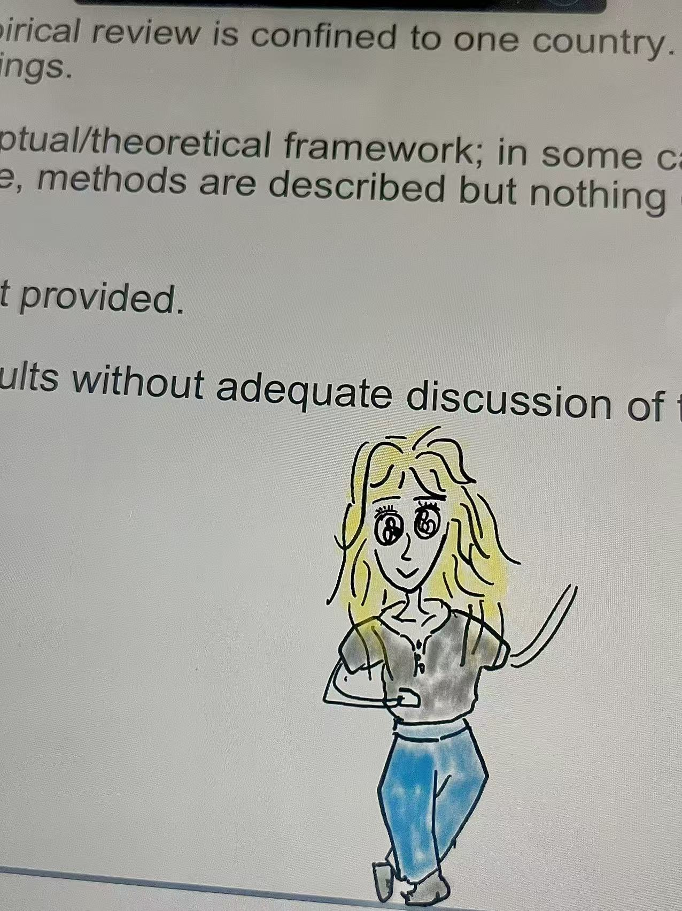
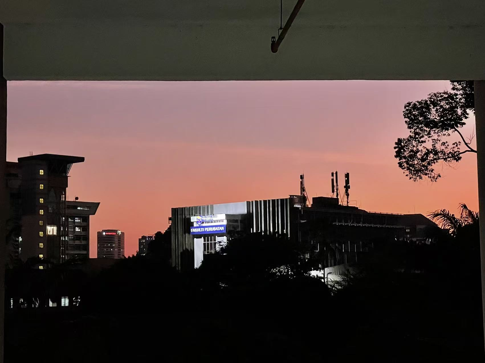

训练集 (Training Set)
应用统计学硕士 @ UM
Score: 3.77 / 4.00
高显著性的学术采样结果


🧁 Data Analyst · AI Explorer
[ 系统自述 · System Log ]：
Kat / 26Y / GPA 3.77 / QS Top 100 Univ. / IELTS 6.0
一位在随机过程中寻找确定性的数据玩家
[ 运行状态 · Runtime Status ]：
目前处于高性能模式，准备接入下一个高挑战增长业务
训练集 (Training Set)
应用统计学硕士 @ UM
Score: 3.77 / 4.00
高显著性的学术采样结果
输出函数 (Output Functions)
数据分析 + AI探索
Data x Decision
特征工程 (Feature Engineering)
拒接平庸
优化生活采样效率
数据接口 (API Endpoint)
tatalu959@gmail.com
欢迎连接合作
🎮 峡谷策略家 —— 云顶宗师，擅长寻找版本最优解
🌍 主流平台全覆盖：深耕微博、小红书、抖音，同时活跃于 IG 与 X (Twitter)，具备跨文化国际化视野
📈 社群增长实战：曾深度参与豆瓣小组建设，见证并驱动社群规模从 900 人向 6 万人的非线性跨越
🧭 多模态观察：从内娱/韩娱粉丝经济到二次元/游戏硬核文化，能快速识别语料特征与情绪阈值
特质：统计学家的理性视角 + 互联网冲浪手的一线嗅觉
Signal Radar
内娱/韩娱
舆情分析进度 100%
二次元/动漫
世界观解析 95%
LOL/游戏
策略理解 90%
全球趋势(X/IG)
同步速率 100%
向下滑动，查看关键存档点


🛰 v1.0 (2017 - 2021) · 基座构建 @ 重庆
完成金融学底层架构搭建，在重庆工商大学录入金融逻辑，初次尝试将行业洞察转化为结构化报告。
2017.09 - 2021.06
系统学习经济学、公司金融与统计基础，完成“金融认知模块”的初次训练。
2020.09 - 2020.12
依据 ESSS 标准参与调研、访谈与数据清洗，支持社会影响评估报告撰写与风险识别建议。
🧩 v2.0 (2021 - 2024) · 插件加载 & 风险重构
载入风险咨询与合规审计插件（Deloitte/西部金融研究院）。在多模态业务场景中完成实战补丁，实现从金融理论到风险治理的逻辑迁移。
2022.04 - 2022.07
利用 Wind 抓取并清洗区域上市公司数据，独立完成研究报告三板部分撰写。
2023.05 - 2024.08
围绕商业贿赂及第三方管理等高风险场景输出 30+ 份尽调报告，并搭建多维月报体系沉淀分析模板。
🚀 v3.0 (2024 - 2026) · 统计学内核升级 @ 吉隆坡
切换至“应用统计学”高阶架构。以 GPA 3.77 完成人生算法的显著性迭代，深度集成 Python/SQL 等数据治理工具链。
2024.10 - 2026.04
强化抽样调查、因子分析、预测建模与可视化方法，形成结构化决策分析链路。
2025.02 - 2025.06
通过 AutoAccount 统一票据数据字段格式，完成银行账单复核与调节表编制，强化数据一致性与合规存档。
2025.07 - 2025.10
利用 Python 脚本实现报告全链路自动化生成，将报告校对耗时降低 90%，并实现核心指标 BI 看板实时监控。
🛰️ v3.5 (2026 - Present) · 寻找全局最优解
系统当前运行平稳，正在进行大规模人生参数平滑。期待接入具备高增长潜力的业务场景，通过确定性逻辑对抗随机性挑战。
Patch-01 · Pharma Data
利用 Python 脚本实现报告全链路自动化生成，将报告校对耗时降低 90%，并实现核心指标 BI 看板实时监控。
Patch-02 · Compliance Ops
通过 AutoAccount 统一票据数据字段格式，完成银行账单复核与调节表编制，强化数据一致性与合规存档。
Patch-03 · Risk Intelligence
围绕商业贿赂及第三方管理等高风险场景输出 30+ 份尽调报告，并搭建多维月报体系沉淀分析模板。
Patch-04 · Research Integration
利用 Wind 抓取并清洗区域上市公司数据，独立完成研究报告三板部分撰写。
[背景] 电商转化受多因素耦合影响，存在预算投放与渠道归因偏差。
[技术栈] SQL + Python + 归因逻辑 + 指标切片（display/email/social/search）。
[结果] 模拟资源重分配后 ROI 提升约 4.29%，并形成可复用分析流程。
[背景] 希望实现更高保真度的音色转换与风格迁移，兼顾可听感与迭代效率。
[技术栈] UVR + RipX + RVC + Audition，多轮数据清洗、音轨分离、模型微调。
[结果] 构建稳定的 AIGC 音频生成工作流，显著提升生成质量与实验复现速度。
Core Modules
Execution Cooldown Bars